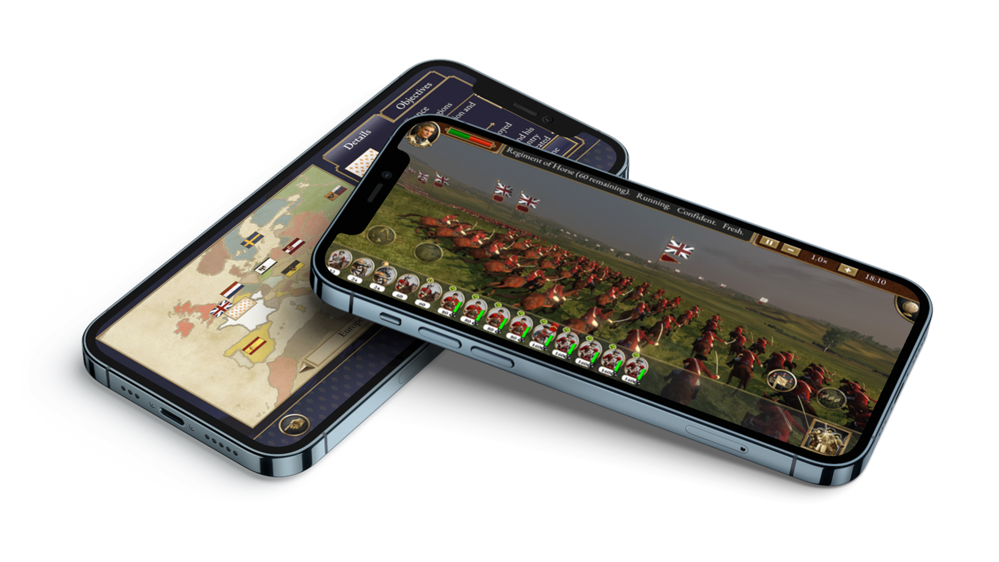
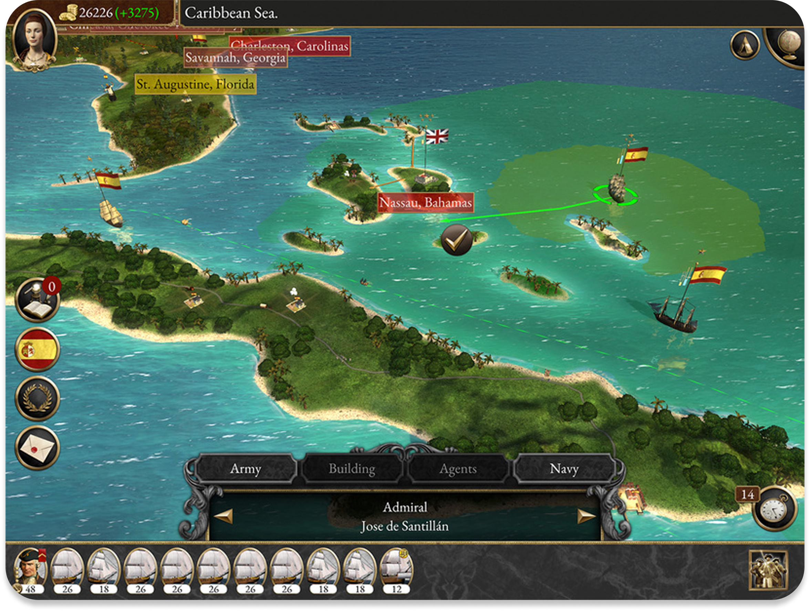
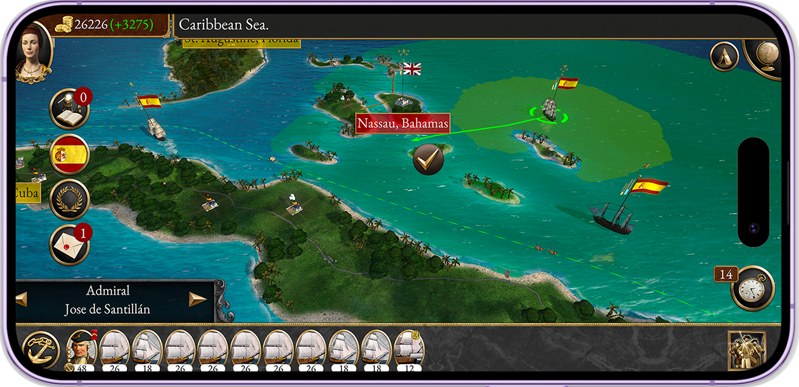

Home  Empire: Total War - iOS and Android Port
Empire: Total War - iOS and Android Port
Empire: Total War (originally released in 2009 for Windows and macOS) is widely regarded as one of the most ambitious strategy titles of its era. When I joined Feral Interactive in London as a UX Engineer—my first role after completing my master’s degree—I was tasked with helping bring this PC classic to iOS and Android for the first time.
This meant reimagining a dense, information‑rich strategy interface for touchscreens, modernising the UX, and ensuring it functioned seamlessly across the entire mobile device ecosystem—from small iPhones to large Android tablets.

As the lead UX Engineer on the project, my position sat directly between design and engineering. I worked as both:
This hybrid role allowed me to prevent siloing between teams and ensure the UX vision was carried through all the way into the shipped product.

Because mobile strategy games thrive or fail based on clarity and usability, testing played a major role in my workflow. I completed:
Ensuring that the UI remained readable, responsive, and stable on dozens of screen sizes was one of the most challenging—and rewarding—parts of the role.
My work helped transform a complex desktop strategy game into a fully touch‑optimised mobile experience, maintaining the richness of the original while ensuring it felt natural to play on modern devices. The project strengthened my skills in:
Ensuring that the UI remained readable, responsive, and stable on dozens of screen sizes was one of the most challenging—and rewarding—parts of the role.
